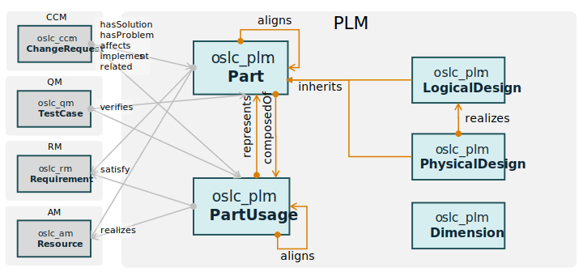

<!DOCTYPE html>
<html xmlns="http://www.w3.org/1999/xhtml" lang="en">
  <head>
    <meta charset="utf-8" />
    <title>OSLC Product Lifecycle Management Version 1.0. Part 1: Specification</title>
    <meta
      name="description"
      content="This specification defines the OSLC Product Lifecycle Management domain, a RESTful web
services interface for lifecycle management of product resources."
    />

    <script
      src="https://cdn.jsdelivr.net/gh/oasis-tcs/tab-respec@v2.1.35/builds/respec-oasis-common.min.js"
      async
      class="remove"
    ></script>
    <script class="remove">
      var status = "WD";
      var revision = 1;

      var wdBase = "https://oslc-op.github.io/oslc-specs/specs/plm/";
      var oasisBase = "https://docs.oasis-open-projects.org/oslc-op/plm/vq.0/";
      var thisBase = wdBase;
      if ("WD" !== status) {
        if (status == "OS") {
          var thisBase = oasisBase + status.toLowerCase() + "/";
        } else {
          var thisBase = oasisBase + status.toLowerCase() + revision.toString().padStart(2, "0") + "/";
        }
      }

      var respecConfig = {
        shortName: "oslc-plm",
        specStatus: status,
        revision: revision.toString().padStart(2, "0"),
        citationLabel: "OSLC-PLM-1.0-Part1",

        license: "cc-by-4",
        additionalLicenses: [
          {
            licenseName: "Apache License 2.0",
            licenseURI: "https://www.apache.org/licenses/LICENSE-2.0",
          },
        ],

        publishDate: "2024-12-25T12:00Z",
        //previousPublishDate: "2021-09-30",
        //previousMaturity: "PS",

        thisVersion: thisBase + "plm-spec.html",
        //prevVersion: "https://docs.oasis-open-projects.org/oslc-op/plm/v1.0/psd01/plm-spec.html",
        latestVersion: oasisBase + "plm-spec.html",
        latestSpecVersion: "https://open-services.net/spec/plm/latest",
        edDraftURI: "https://open-services.net/spec/plm/latest-draft",

        // Other parts of multi-part spec
        additionalArtifacts: [
          {
            title: "OSLC Product Lifecycle Management Version 1.0. Part 1: Specification (this document)",
            href: "plm-spec.html",
          },
          {
            title: "OSLC Product Lifecycle Management Version 1.0. Part 2: Vocabulary",
            href: "plm-vocab.html",
          },
          {
            title: "OSLC Product Lifecycle Management Version 1.0. Part 3: Constraints",
            href: "plm-shapes.html",
          },
          {
            title: "OSLC Product Lifecycle Management Version 1.0. Part 4: Machine Readable Vocabulary Terms",
            href: "plm-vocab.ttl",
          },
          {
            title: "OSLC Product Lifecycle Management Version 1.0. Part 5: Machine Readable Constraints",
            href: "plm-shapes.ttl",
          },
        ],

        relatedWork: [
          {
            title: "OMG Systems Modeling Language",
            href: "https://www.omg.org/spec/SysML/",
            version: "2.0 Beta",
          },
        ],

        // Only include h1 and h2 levels in the table of contents
        maxTocLevel: 3,
        conformanceLabelPrefix: "PLM",
        // noConformanceStyling: 1,
        // noConformanceTable: 1,
        // conformanceClauseStrength : 1,

        // Chairs and editors, add as many as you like: you must have at least one editor.
        // Only "name" is required, but the other fields are recommended.
        editors: [
          {
            name: "Ed Gentry",
            mailto: "e.gentry@mid.de",
            company: "MID",
            companyURL: "https://mid.de/en/",
          },
          {
            name: "Jim Amsden",
            mailto: "j.amsden-ext@mid.de",
            company: "MID",
            companyURL: "https://mid.de/en/",
          },
        ],
        chairs: [
          {
            name: "Jim Amsden",
            mailto: "j.amsden-ext@mid.de",
            company: "MID",
            companyURL: "https://mid.de/en/",
          },
          {
            name: "Jad El-khoury",
            mailto: "jad.elkhoury@lynxwork.com",
            company: "LYNXWORK",
            companyURL: "https://lynxwork.com",
          },
        ],

        // name of the TC
        wg: "OASIS Open Services for Lifecycle Collaboration (OSLC) OP",
        wgShortName: "oslc-op",

        // Namespaces defined by this TC
        namespaces: [{ href: "http://open-services.net/ns/plm#", prefix: "oslc_plm" }],

        localBiblio: {
          OSLCCore2: {
            title: "OSLC Core Specification 2.0",
            href: "https://archive.open-services.net/bin/view/Main/OslcCoreSpecification",
            authors: ["Dave Johnson", "S. Speicher"],
            status: "Finalized",
            publisher: "https://open-services.net/",
          },
          OSLCCore3: {
            title: "OSLC Core Version 3.0. Part 1: Overview",
            href: "https://docs.oasis-open-projects.org/oslc-op/core/v3.0/oslc-core.html",
            authors: ["Jim Amsden", "S. Speicher"],
            status: "OASIS Standard",
            publisher: "OASIS",
          },
          OSLCPreview: {
            title: "OSLC Core Version 3.0. Part 3: Resource Preview0",
            href: "https://docs.oasis-open-projects.org/oslc-op/core/v3.0/resource-preview.html",
            status: "OASIS Standard",
            publisher: "OASIS",
          },
          OSLCAM: {
            title: "OSLC Architecture Management Version 3.0. Part 1: Specification",
            href: "https://docs.oasis-open-projects.org/oslc-op/am/v3.0/os/architecture-management-spec.html",
            authors: ["Jim Amsden", "Andrii Berezovskyi"],
            status: "OASIS Standard",
            publisher: "OASIS",
          },
          DublinCore: {
            title: "Dublin Core Metadata Element Set, Version 1.1",
            href: "http://dublincore.org/documents/dces/",
            status: "DCMI Recommendation",
            publisher: "Dublin Core Metadata Initiative",
          },
          FOAF: {
            title: "Friend of a Friend (FOAF)",
            href: "http://xmlns.com/foaf/spec/",
            authors: ["Dan Brickley", "Libby Miller"],
            status: "Finalized",
            publisher: "FOAF project",
          },
          "RDF/XML Concepts": {
            title: "RDF/XML Concepts and Abstract Syntax",
            href: "http://www.w3.org/TR/2004/REC-rdf-concepts-20040210/",
            authors: ["Graham Klyne", "Jeremy J. Carroll"],
            status: "Superseded Recommendation",
            publisher: "www.w3.org",
          },
          "RDF/XML Syntax": {
            title: "RDF/XML Syntax Specification (Revised)",
            href: "http://www.w3.org/TR/2004/REC-rdf-syntax-grammar-20040210/",
            authors: ["Dave Beckett"],
            status: "Revision",
            publisher: "www.w3.org",
          },
          "URI Syntax": {
            title: "URI Generic Syntax",
            href: "https://tools.ietf.org/html/rfc3986",
            status: "Working Group Note",
          },
          "XML Namespaces": {
            title: "Namespaces in XML 1.0 (Third Edition)",
            href: "http://www.w3.org/TR/REC-xml-names/",
            authors: ["Tim Bray", "Dave Hollander", "Andrew Layman", "Richard Tobin", "Henry S. Thompson"],
            publisher: "www.w3.org",
          },
          "XML Base": {
            title: "XML Base (Second Edition)",
            href: "http://www.w3.org/TR/xmlbase/",
            authors: ["Jonathan Marsh", "Richard Tobin"],
            status: "Recommendation",
            publisher: "www.w3.org",
          },
          "XSD Datatypes": {
            title: "XML Schema Part 2: Datatypes Second Edition",
            href: "http://www.w3.org/TR/xmlschema-2/",
            authors: ["Paul V. Biron", "Ashok Malhotra"],
            status: "Final",
            publisher: "https://open-services.net/",
          },
          OSLCCoreVocab: {
            title: "OSLC Core Version 3.0. Part 7: Vocabulary",
            href: "https://docs.oasis-open-projects.org/oslc-op/core/v3.0/core-vocab.html",
            authors: ["Jim Amsden", "S. Padgett", "S. Speicher"],
            status: "OASIS Standard",
            publisher: "OASIS",
          },
          OSLCShapes: {
            title: "OSLC Core Version 3.0. Part 6: Resource Shape",
            href: "https://docs.oasis-open-projects.org/oslc-op/core/v3.0/resource-shape.html",
            authors: ["Arthur Ryman", "Jim Amsden"],
            status: "OASIS Standard",
            publisher: "OASIS",
          },
          LDPPatch: {
            title: "Linked Data Patch Format",
            href: "http://www.w3.org/TR/ldpatch/",
            status: "Working Group Note",
            publisher: "http://www.w3.org/",
          },
        },
      };
    </script>
  </head>
  <body>
    <section id="abstract">
      <p>
        This specification defines the OSLC Product Lifecycle Management (PLM) domain, a RESTful web services interface
        for the PLM v2 resources and relationships between those and related resources such as product change requests,
        activities, tasks, requirements or test cases. To support these scenarios, this specification defines a set of
        HTTP-based RESTful interfaces in terms of HTTP methods: GET, POST, PUT and DELETE, as well as HTTP response
        codes, content type handling and resource formats.
      </p>
    </section>

    <section id="toc"></section>

    <section id="sotd"></section>

    <section id="intro" class="informative">
      <h2>Introduction</h2>
      <p></p>
      <p>
        This specification defines a RESTful web services interface for the Product Lifecycle Management (PLM) domain.
        This domain addresses the management of physical and logical designs of products and parts, and relationships
        with other OSLC resources such as requirements, testing resources and change requests. To support these
        scenarios, this specification defines a set of HTTP-based RESTful interfaces in terms of HTTP methods: GET,
        POST, PUT and DELETE, HTTP response codes, content type handling and resource formats.
      </p>
      <p>
        The intent of this specification is to define the capabilities needed to support integration scenarios and not
        to provide a comprehensive interface to Product Lifecycle Management.
      </p>
      <p>
        This specification is a [[!OSLCCore3]] compliant specification, and as such most of its content are references
        to [[!OSLCCore3]].
      </p>

      <section id="terminology">
        <h3>Terminology</h3>
        <dl class="spaced">
          <dt>PLM Client</dt>
          <dd>
            An implementation of the OSLC PLM specifications as a client. OSLC PLM Clients consume services provided by
            PLM servers.
          </dd>

          <dt>PLM Server</dt>
          <dd>
            A server implementing the OSLC PLM domain specifications. OSLC PLM clients consume services provided by PLM
            Servers. The use of the terms Client and Server are intended to distinguish typical consumers and providers
            of OSLC resources in a distributed environment based on REST. A particular application component could be a
            client for some OSLC domain services and a server for the same or another domain.
          </dd>
        </dl>
      </section>
      <section id="references"><h3>References</h3></section>
      <section id="conventions"></section>
    </section>

    <section id="" overview class="informative">
      <h3>Overview</h3>
      <p>
        This specification defines a vocabulary for OSLC Product Lifecycle Management resources. The intent is to define
        resources needed to support common integration scenarios and not to provide a comprehensive definition of
        product lifecycle management resources.
      </p>
      <p>
        The following is an overview of the PLM specification. The specification includes classes: Part, PartUsage,
        LogicalDesign and PhysicalDesign, and Dimension; links between these within the PLM domain and links to classes
        in other OSLC domains.
      </p>
      <figure id="PLMModel">
        
        <figcaption>PLM Overview Diagram</figcaption>
      </figure>
      <pre class="example" title="PLM Example">
@prefix oslc_plm: <http://open-servces.net/ns/plm#>.
@prefix dc: <http://purl.org/dc/elements/1.1/>.
@prefix dcterms: <http://purl.org/dc/terms/>.

# teamcenter plm namespaces
@prefix tc_plm_material: <http://teamcenter.com/ns/plm/material>. 
@prefix tc_plm: <http://teamcenter.com/ns/plm/>. 

<http://example.com/oslc/PhysicalComponent/12345>
  a oslc_plm:Part;
  dcterms:title "Brake Housing"@en;
  dcterms:description "A caliper housing that holds the brake shoes."@en;
  tc_plm:weight "1.2 kg";
  tc_plm:material tc_plm_material:steel;
  dcterms:identifier "gs-001-15489";
  oslc_plm:boundingBox[
    a oslc_plm:Dimension;
    oslc_plm:height: "10 cm";
    oslc_plm:width: "20 cm"; 
    oslc_plm:length: "10 cm"];
  tc_plm:relatedTo <http://example.com/oslc/PhysicalAssembly/67890>;
  oslc_plm:composedOf <http://example.com/oslc/Usage/33>.

<http://example.com/oslc/Usage/33>
  a oslc_plm:PartUsage;
  oslc_plm:represents <http://example.com/oslc/PhysicalComponent/71350>.
  
<http://example.com/oslc/PhysicalComponent/71350>
  a oslc_plm:Part;
  dcterms:title "Brake Shoe"@en;
  dcterms:description "A brake shoe carries the brake lining inside brake drums."@en;
  tc_plm:weight "3.2 kg";
  tc_plm:material tc_plm_material:ceramic;
  dcterms:identifier "gs-001-15489";
  oslc_plm:boundingBox[
    a oslc_plm:Dimension;
    oslc_plm:height: "5 cm";
    oslc_plm:width: "5 cm"; 
    oslc_plm:length: "10 cm"];
  tc_plm:relatedTo <http://example.com/oslc/BOM/brakeshoe>.	
      </pre>
    </section>

    <section id="baseRequirements">
      <h2>Base Requirements</h2>

      <p>
        The following sub-sections define the mandatory and optional requirements for an OSLC PLM (OSLC PLM) server.
      </p>

      <section id="baseCompliance">
        <h2>Base Compliance</h2>
        <p class="conformance">
          This specification is based on [[!OSLCCore3]]. OSLC PLM servers MUST be compliant with both the core
          specification, MUST follow all the mandatory requirements in the normative sections of this specification, and
          SHOULD follow all the guidelines and recommendations in both these specifications.
        </p>

        <p class="conformance">
          An OSLC PLM server MUST implement the domain vocabulary defined in
          <a href="plm-vocab.html">OSLC Product Lifecycle Management Version 1.0. Part 2: Vocabulary</a>
        </p>

        <p>
          The following table summarizes the requirements from OSLC Core Specification as well as some additional
          requirements specific to the PLM domain. Note that this specification further restricts some of the
          requirements from the OSLC Core Specification. See the previous sections in this specification or the OSLC
          Core Specification to get further details on each of these requirements.
        </p>

        <table border="1" cellspacing="0" cellpadding="5">
          <thead>
            <tr>
              <th>Requirement</th>
              <th>Meaning</th>
            </tr>
          </thead>
          <tbody>
            <tr>
              <td>Absolute URIs</td>
              <td class="conformance">
                PLM Servers MUST use absolute URIs for all references to resources by properties
              </td>
            </tr>
            <tr>
              <td>Unknown properties and content</td>
              <td class="conformance">
                PLM Servers MAY ignore unknown content and PLM clients MUST preserve unknown content. PLM Servers MAY
                discard such properties and continue the POST or PUT operation without warning to the client.
              </td>
            </tr>
            <tr>
              <td>Resource Operations</td>
              <td class="conformance">PLM Servers MUST support resource operations via standard HTTP operations</td>
            </tr>
            <tr>
              <td>Update and Delete</td>
              <td class="conformance">
                PLM Servers SHOULD support resource modifications with standard HTTP PUT and DELETE methods. PLM Servers
                MAY limit modifications
              </td>
            </tr>
            <tr>
              <td>HTTP If-Match use</td>
              <td class="conformance">
                PLM Servers supporting update and delete of resources MUST support the standard HTTP If-Match header in
                PUT and DELETE for concurrency protection of resources.
              </td>
            </tr>
            <tr>
              <td>Resource Paging</td>
              <td class="conformance">
                PLM Servers MAY provide paging for resources but only when specifically requested by clients
              </td>
            </tr>
            <tr>
              <td>Partial Resource Representations</td>
              <td class="conformance">
                PLM Servers MAY support requests for a subset of a resource's properties via the oslc.properties URL
                parameter retrieval via HTTP GET
              </td>
            </tr>
            <tr>
              <td>Partial Update</td>
              <td class="conformance">
                PLM Servers MAY support partial update of resources via the oslc.properties URL parameter retrieval via
                HTTP PUT and or using [[LDPPatch]].
              </td>
            </tr>
            <tr>
              <td>Discovery</td>
              <td class="conformance">
                PLM Servers MAY provide a Service Provider Catalog, MUST provide a Service Provider resource, and MAY
                provide other forms of discovery described in [[!OSLCCore3]].
              </td>
            </tr>
            <tr>
              <td>Creation Factories</td>
              <td class="conformance">
                PLM Servers MAY provide creation factories for resource formats that it supports. PLM Servers MAY
                support creation factories for OSLC PLM defined resources formatted as application/rdf+xml. PLM Servers
                MAY support creation factories for other formats, and indicate such creation factories with a
                non-default identifier in the oslc:usage property of the creation factory definition in the service
                provider document
              </td>
            </tr>
            <tr>
              <td>Query Capabilities</td>
              <td class="conformance">
                PLM Servers MUST provide query capabilities on PLM resources to enable clients to query for resources.
                PLM Servers MAY support the full query syntax for LinkType resources.
              </td>
            </tr>
            <tr>
              <td>Query Syntax</td>
              <td class="conformance">OSLC query capabilities MUST support the OSLC Core Query Syntax</td>
            </tr>
            <tr>
              <td>Delegated Dialogs</td>
              <td class="conformance">
                PLM Services SHOULD offer selection delegated dialogs and MAY offer creation delegated dialogs specified
                via service provider resource
              </td>
            </tr>
            <tr>
              <td>Resource Preview</td>
              <td class="conformance">
                PLM Services SHOULD offer resource previews for resources that may be referenced by other resources
              </td>
            </tr>
            <tr>
              <td>Authentication</td>
              <td class="conformance">
                PLM Services SHOULD follow the recommendations for Authentication specified in [[!OSLCCore3]]
              </td>
            </tr>
            <tr>
              <td>Error Responses</td>
              <td class="conformance">
                PLM Servers SHOULD provide error responses using OSLC Core defined error formats
              </td>
            </tr>
            <tr>
              <td>RDF/XML Representations</td>
              <td class="conformance">PLM Servers MUST support RDF/XML representations for OSLC Defined Resources</td>
            </tr>
            <tr>
              <td>XML Representations</td>
              <td class="conformance">
                PLM Servers MUST support XML representations that conform to the OSLC Core Guidelines for XML
              </td>
            </tr>
            <tr>
              <td>JSON Representations</td>
              <td class="conformance">
                PLM Servers MAY support JSON representations; those which do MUST conform to the OSLC Core Guidelines
                for JSON
              </td>
            </tr>
            <tr>
              <td>HTML Representations</td>
              <td class="conformance">PLM Servers MAY provide HTML representations for GET requests</td>
            </tr>
          </tbody>
        </table>
      </section>

      <section id="versioning">
        <h2 id="specificationversioningspec_versioning">Specification Versioning</h2>

        <p>This specification follows the specification version guidelines given in [[!OSLCCore3]].</p>
      </section>

      <section id="namespaces">
        <h2>Namespaces</h2>

        <p>
          In addition to the namespace URIs and namespace prefixes <code>oslc</code>, <code>rdf</code>,
          <code>dcterms</code> and <code>foaf</code> defined in [[!OSLCCore3]], OSLC PLM defines the namespace URI of
          <code>http://open-services.net/ns/plm#</code> with a preferred namespace prefix of <code>oslc_plm</code>.
        </p>
      </section>
      <section id="formats">
        <h2>Resource Formats</h2>

        <p>
          In addition to the requirements for resource representations in [[!OSLCCore3]], this section outlines further
          refinements and restrictions.
        </p>

        <p>For HTTP GET/PUT/POST requests on all OSLC PLM and OSLC Core defined resource types,</p>

        <ul>
          <li class="conformance">
            PLM Servers MUST support RDF/XML representations with media-type <code>application/rdf+xml</code>. PLM
            Clients SHOULD be prepared to deal with any valid RDF/XML document.
          </li>
          <li class="conformance">
            PLM Servers MUST support XML representations with media-type <code>application/xml</code>. The XML
            representations MUST follow the guidelines outlined in the
            <a href="http://open-services.net/bin/view/Main/OSLCCoreSpecAppendixRepresentations"
              >OSLC Core Representations Guidance</a
            >
            to maintain compatibility with [[!OSLCCore2]].
          </li>
          <li class="conformance">
            PLM Servers MAY support JSON representations with media-type <code>application/json</code>. The JSON
            representations MUST follow the guidelines outlined in the
            <a href="http://open-services.net/bin/view/Main/OSLCCoreSpecAppendixRepresentations"
              >OSLC Core Representations Guidance</a
            >
            to maintain compatibility with [[!OSLCCore2]].
          </li>
        </ul>
      </section>

      <section id="resourceOps">
        <h2>Resource Operations</h2>

        <p class="conformance">
          For compatibility with OSLC 2.0, OSLC PLM Servers MAY accept the OSLC Core Version header (OSLC-Core-Version:
          2.0) in any HTTP request as specified in [[!OSLCCore3]], and return an OSLC PLM 2.0 representation (including
          the OSLC-Core-Version: 2.0 header). If the OSLC Core Version header is absent on a request, or has some
          undefined value, the OSLC PLM Server MUST return an PLM 2.0 representation.
        </p>

        <p class="conformance">
          OSLC PLM Servers MUST support HTTP GET requests on PLM Resources, with an Accept header of
          <code>application/rdf+xml</code>, and return the RDF/XML representation of the resource.
        </p>

        <p class="conformance">
          OSLC PLM Servers SHOULD support HTTP GET requests on PLM Resources, with an Accept header of an HTML type (
          <code>application/html</code>, <code>application/xhtml</code>), and return either an HTML/XHTML representation
          of the resource or redirect the client to another URL that can (i.e. 302 Redirect).
        </p>

        <p class="conformance">
          OSLC PLM Servers SHOULD support HTTP GET requests for user interface (UI) preview of PLM Resources as defined
          by [[!OSLCPreview]].
        </p>

        <p class="conformance">
          OSLC PLM Servers SHOULD support resource modifications on PLM Resources with standard HTTP PUT and DELETE
          methods. PLM Servers MAY limit modifications in any way they want. For example a service provider may limit
          updates to resources to simple link properties of link types already defined in the provider. Modification
          methods MUST use the If-Match header for concurrency management. Providers MAY discard such properties and
          continue a PUT operation without warning to the client.
        </p>

        <p class="conformance">
          OSLC PLM Servers SHOULD support resource modifications on LinkType Resources (LTR) with standard HTTP PUT and
          DELETE methods. PLM Servers MAY limit modifications in any way they want. For example a service provider may
          not support additional properties. Modification methods SHOULD use the If-Match header for concurrency
          management.
        </p>
      </section>

      <section id="authentication">
        <h2>Authentication</h2>

        <p>See [[!OSLCCore3]], OSLC PLM puts no additional constraints on authentication.</p>
      </section>

      <section id="errors">
        <h2>Error Responses</h2>

        <p>See [[!OSLCCore3]], OSLC PLM puts no additional constraints on error responses</p>
      </section>

      <section id="pagination">
        <h2>Pagination</h2>

        <p class="conformance">
          OSLC PLM Servers SHOULD support pagination of query results and MAY support pagination of a single resource's
          properties as defined by [[!OSLCCore3]].
        </p>
      </section>

      <section id="requestProps">
        <h3>Requesting and Updating Properties</h3>

        <section id="requestSubset">
          <h4>Requesting a Subset of Properties</h4>

          <p class="conformance">
            An OSLC PLM server MAY support the <code>oslc.properties</code> URL query parameter on an HTTP GET request
            on individual resource request or a collection of resources by query. If the
            <code>oslc.properties</code> query parameter is omitted on the request, then all resource properties MUST be
            provided in the response.
          </p>
        </section>

        <section id="updateSubset">
          <h4>Updating a Subset of Properties</h4>

          <p class="conformance">
            An OSLC PLM client MAY request that a subset of a resource's properties be updated by identifying those
            properties to be modified using the <code>oslc.properties</code> URL parameter on a HTTP PUT request.
          </p>
        </section>

        <section id="updatingMultiValueProps">
          <h4>Updating Multi-Valued Properties</h4>

          <p class="conformance">
            An OSLC PLM Server MAY support updating a subset of a resource's properties by using the [[LDPPatch]]
            <code>PATCH</code> method.
          </p>

          <p class="conformance">
            For compatibility with [[!OSLCCore2]], an PLM Server MAY also support partial update by identifying those
            properties to be modified using the <code>oslc.properties</code> URL parameter on a HTTP PUT request.
          </p>

          <p class="conformance">
            If the parameter <code>oslc.properties</code> contains a valid resource property on the request that is not
            provided in the content, the server MUST set the resource's property to a null or empty value. If the
            parameter <code>oslc.properties</code> contains an invalid resource property, then a
            <code>409 Conflict</code> MUST be returned.
          </p>
        </section>
      </section>
    </section>

    <section id="ResourceDefs">
      <h2>Vocabulary Terms and Constraints</h2>
      <p>
        <a href="plm-vocab.html">OSLC PLM Resources 2.1</a> Defines the vocabulary terms and constraints for OSLC
        Product Lifecycle Management resources. These terms and constraints are specified according to [[!OSLCCore3]].
      </p>
    </section>

    <section id="capabilities">
      <h2>PLM Server Capabilities</h2>

      <section id="resourceShapes1">
        <h3>Resource Shapes</h3>

        <p class="conformance">OSLC PLM servers SHOULD support Resource Shapes as defined in [[!OSLCShapes]].</p>
      </section>

      <section id="resources">
        <h3>Service Provider Resources</h3>

        <p class="conformance">
          OSLC PLM Servers MUST provide a ServiceProvider Resource that can be retrieved at a implementation dependent
          URI.
        </p>

        <p class="conformance">
          OSLC PLM Servers MUST provide a ServiceProviderCatalog Resource that can be retrieved at a implementation
          dependent URI.
        </p>

        <p class="conformance">
          OSLC PLM Servers MUST provide an <code>oslc:serviceProvider</code> property for their defined resources that
          will be the URI to a ServiceProvider Resource. This does not prevent PLM Servers from providing multiple
          servie provider properties with different values, if the service provider supports multiple OSLC domain
          specifications, and the resource is applicable to multiple domains.
        </p>

        <p class="conformance">
          OSLC PLM Servers MUST supply a value of <code>http://open-services.net/ns/plm#</code> for the property
          <code>oslc:domain</code> on either <code>oslc:ServiceProvider</code> or
          <code>oslc:ServiceProviderCatalog</code> resources.
        </p>
      </section>

      <section id="creationfactories">
        <h3>Creation Factories</h3>

        <p class="conformance">OSLC PLM Servers MAY support CreationFactories as defined by [[!OSLCCore3]].</p>

        <p class="conformance">
          OSLC PLM Servers MAY discard properties it does not recognize and continue the POST operation without warning
          to the client. The returned resource will contain the accepted properties (and server generated properties
          like the dcterms:identifer) so clients will be able to confirm if required what was accepted.
        </p>

        <p class="conformance">
          If OSLC PLM Servers support the creation of resources from the OSLC defined
          <code>oslc_plm:Part</code> format, there MUST be at least one Creation Factory entry in the Services
          definition, and its <code>oslc:usage</code> property MUST be set to
          <code>http://open-services/ns/core#default</code>. The <code>oslc:resourceType</code> MUST be set to
          <code>http://open-services.net/ns/plm#Part</code>.
        </p>

        <p class="conformance">
          If OSLC PLM Servers support the creation of resources from a resource other than
          <code>oslc_plm:Part</code>, there MUST be a separate creation services definition whose
          <code>oslc:usage</code> property MUST NOT be set to <code>http://open-services/ns/core#default</code>.
        </p>
      </section>

      <section id="querycapabilities">
        <h3>Query Capabilities</h3>

        <p class="conformance">
          OSLC PLM Servers SHOULD support the Query Capabilities as defined by [[!OSLCCore3]] for all PLM resources.
        </p>

        <p class="conformance">
          If the service provider supports query capability for PLM resources, it MUST support the following query
          parameters:
        </p>

        <ul>
          <li><code>oslc.where</code></li>
          <li><code>oslc.searchTerms</code></li>
        </ul>
      </section>

      <section id="delegatedUIs">
        <h3>Delegated UIs</h3>

        <p class="conformance">
          OSLC PLM Servers SHOULD support the selection of resources by delegated selection dialogs as defined by
          [[!OSLCCore3]].
        </p>

        <p class="conformance">
          OSLC PLM Servers MAY support the creation of resources by delegated creation dialogs as defined by
          [[!OSLCCore3]].
        </p>

        <p class="conformance">
          In <code>oslc:Dialog</code> elements, the two optional child elements; <code>oslc:hintWidth</code> and
          <code>oslc:hintHeight</code> specify the suggested size of the dialog or frame to render the HTML content in.
          Expected size values are defined by <a href="http://www.w3.org/TR/CSS1/#length-units">CSS length units</a>.
        </p>
      </section>
    </section>

    <section id="conformance"></section>

    <section class="appendix informative" id="acknowledgments">
      <h2>Acknowledgements</h2>
      <p>
        The following individuals have participated in the creation of this specification and are gratefully
        acknowledged:
      </p>

      <p><b>Participants</b>:</p>
      <p style="margin-left: 40px">
        James Amsden, MID (Editor)<br />
        Ed Gentry, MID (Editor)<br />
      </p>
    </section>
  </body>
</html>
